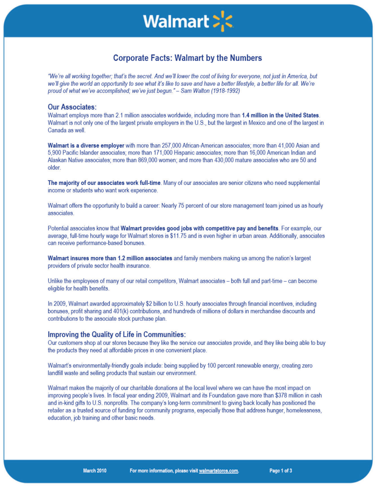
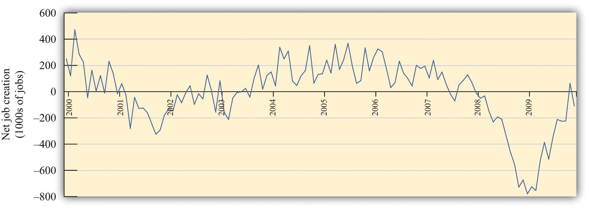

Figure 9.1 Walmart Fact Sheet
Figure 9.1 "Walmart Fact Sheet" is a fact sheet from Walmart. The fact sheet tells you—if you didn’t know already—that Walmart is everywhere. It has over 7,000 retail units in the world, with over 3,000 outside the United States. Walmart employs about 1.36 million people in the United States alone, which is about 1 percent of the total number of workers employed in the United States. It seems that Walmart means jobs.
Figure 9.2 Walmart: Growing Jobs?
Source: This image is taken from http://en.wikipedia.org/wiki/Image:Walmartbizarro.png. The image is copyright Dan Piraro 2006.
Despite the fact that Walmart provides so many jobs, the announcement of a new Walmart store is often greeted with trepidation or outright opposition. There are websites and even a film (http://www.walmartmovie.com) dedicated to criticism of Walmart. It is true that the arrival of Walmart in a town will mean the creation of new jobs, including checkout clerks, shelf packers, and many other positions. Yet the arrival of Walmart will also mean that its competitors will lose jobs. The overall effect on jobs is unclear.
The arrival of a Walmart in a town has implications beyond the effects on jobs. Consumers are likely to face a different menu of goods. Walmart will bring some goods that were previously unavailable, while at the same time other goods sold by unsuccessful specialty stores will disappear. The shopping experience will change for consumers because shopping in a Walmart is not like shopping in a series of small stores. Consumers will face different and—for the most part—lower prices: Walmart is able to obtain goods more cheaply from suppliers and also has a very efficient distribution system that decreases costs. As fewer consumers visit the smaller shops, other nearby businesses, such as local restaurants, may suffer a decline in demand. The patterns of life in the town will change in numerous yet subtle ways.
This scenario has played out in many countries with many different stores. In France, there are hypermarkets such as Carrefour that likewise have had major effects on local businesses and sometimes encounter opposition. In England, the same is true of the Asda supermarket chain. In this chapter, we look at the economics that lies behind a firm’s decision to enter new markets (that is, open new stores) and exit from markets (that is, close down and go out of business). Although we begin here with Walmart, we tell a story that is about much more. Over the course of every year, jobs are created when existing firms expand and new firms enter. At the same time, jobs are lost when firms contract their workforces or close down completely.
A job is created when either an existing firm or a new firm hires workers. Jobs are destroyed when a firm fires some of its workers, some workers quit, or a firm exits a market. Figure 9.3 "US Net Job Creation from 2000 to 2009" provides data on net job creation in the United States from 2000 to 2009. By net job creation, we mean the number of new jobs created minus the number of jobs destroyed. For example, if some firms expand their employment by 200 workers and other firms reduce their workforce by 150 workers, we say that 200 jobs are created, 150 are destroyed, and the net job creation is 50.
Figure 9.3 US Net Job Creation from 2000 to 2009
Job creation and destruction take place all the time. Within an industry, and sometimes even within a firm, we see job creation and destruction occurring simultaneously. The Bureau of Labor Statistics now regularly produces quarterly job creation and destruction rates for the US economy.See Bureau of Labor Statistics, Business Employment Dynamics, “Table 3. Private sector gross job gains and losses, as a percent of employment, seasonally adjusted,” accessed March 1, 2011, http://www.bls.gov/web/cewbd/table3_1.txt. For the US private sector over the period 1990–2010, the average quarterly job creation and destruction rates were 7.5 percent and 7.3 percent, respectively. To put it another way, if you looked at 1,000 typical private sector jobs right now, then 75 of them didn’t exist last quarter, and 73 won’t exist next quarter. This implies that about 15 percent of jobs are either destroyed or created in a given quarter. Steven Davis, John Haltiwanger, and Scott Schuh, who were perhaps the first economists to study these processes in detail, call this job reallocation because it reflects the reshuffling of jobs across production locations. Sometimes a car produced at one particular automobile factory is selling well, so new jobs are created there. In the same quarter, another automobile factory may be shut down because the models produced there are not selling. The picture you should take away from these numbers is one of a very fluid labor market. One of our goals in this chapter is to understand how this labor market works.
One way that jobs can be created is by expanding an existing plant or firm. Another way that jobs are created is by the entry of a new plant or firm. The situation is analogous for job destruction. Some jobs are lost when existing plants contract (such as a plant eliminating a shift). Others are lost through the exit of a plant or a firm. The Davis, Haltiwanger, and Schuh data suggest that, each quarter, 11.5 percent of the jobs destroyed come from plants closing. An additional 20 percent of jobs are destroyed when plants undertake large workforce adjustments of more than 50 percent. On the entry side, about 8.4 percent of jobs created in a quarter are due to start-ups. Of course, if these start-ups are successful, then they create more jobs in later years. Ultimately, we want to answer the following question:
What are the economic forces driving job creation and destruction?
The first part of this chapter examines labor demand by firms. We begin by looking at the decision of how many hours to hire. Then we turn to the entry and exit decisions of firms. We find the decision rules that govern these decisions.
After that, we consider a different way of looking at the labor market by examining the process of search and bargaining. We look at how workers who supply labor and firms that demand labor actually interact. Finally, we examine the effects of various government policies on labor market outcomes.